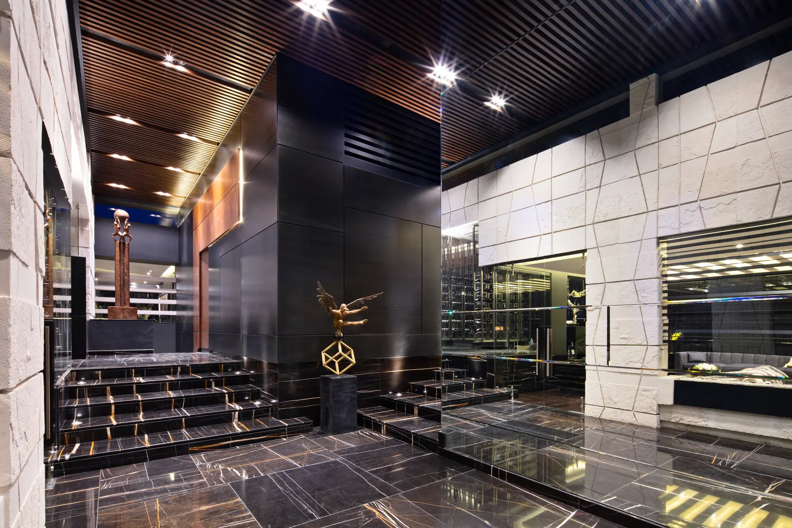
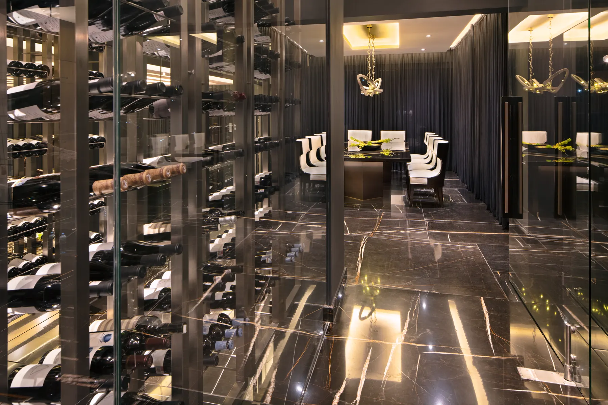
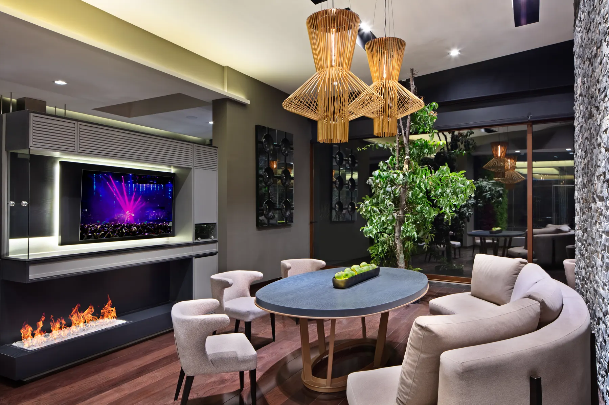
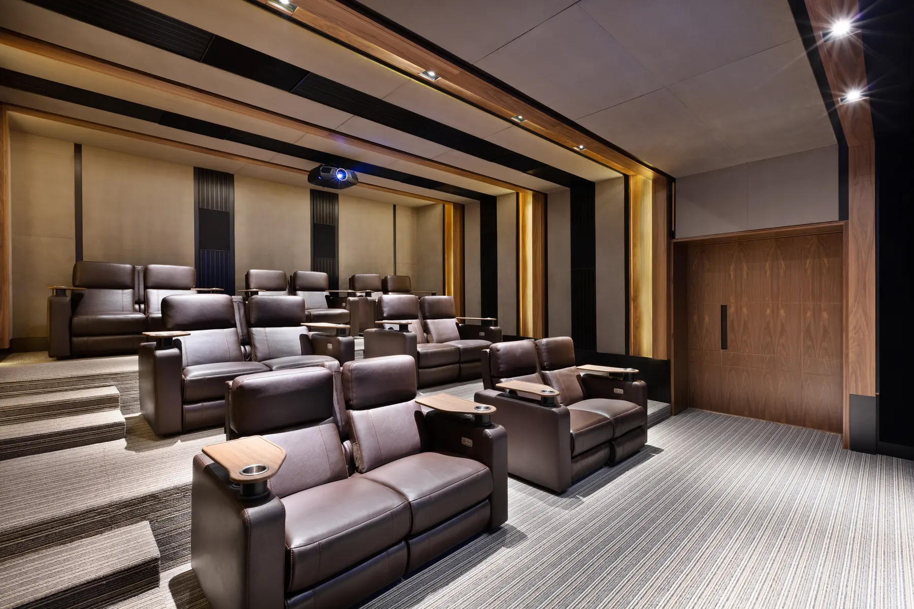

Proyecto
águila real
Residencia construida








El bosque de encinos rodea la casa y la casa le responde con ventanales de grandes dimensiones: la vegetación entra por todos lados y el paisajismo la acerca todavía más. Adentro, dobles alturas, plafones de madera, un muro de piedra que acompaña la escalera y un árbol vivo creciendo dentro de la estancia.
La casa está construida y en uso. De noche el volado de madera se enciende sobre la terraza, el fuego queda a la vista y el comedor, la cava y la sala de cine se ocupan como se dibujaron. Al final de la galería está el render con que se presentó el proyecto: la misma casa, antes de existir.
Siguiente proyecto
 siguiente proyecto: paseo de vallescondido
P-004
siguiente proyecto: paseo de vallescondido
P-004
así empieza también el tuyo
Cada casa de esta galería empieza en una conversación sobre una forma de vivir. La tuya puede ser la próxima.
Agenda una primera conversación